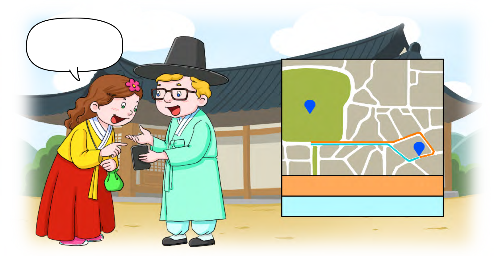
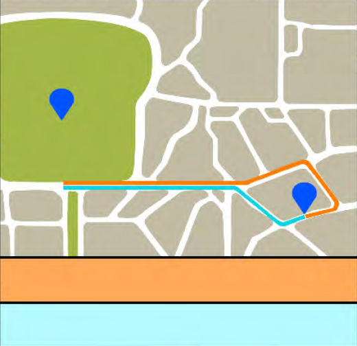

- 그림
- 물음 1
- 물음 2
- 물음 3
- 물음 4
- 물음 5
-
어느 경로가
더 짧지?경북궁숙소①②추천 경로 ① 2.3 km추천 경로 ② 1.8 km -
2.3과 1.8을 수직선에 나타내 보세요.
-
2.3과 1.8은 0.1이 각각 몇 개인가요?
23개18개 -
2.3과 1.8 중에서 어느 소수가 더 작은가요?
1.8 -
두 추천 경로 중 어느 경로가 더 짧은가요?
경북궁숙소①②추천 경로 ① 2.3 km추천 경로 ② 1.8 km추천경로 ② -
소수의 크기를 비교하는 방법을 말해 보세요.
예0.1이 몇 개인지 비교하여 많은 쪽이 더 큽니다.